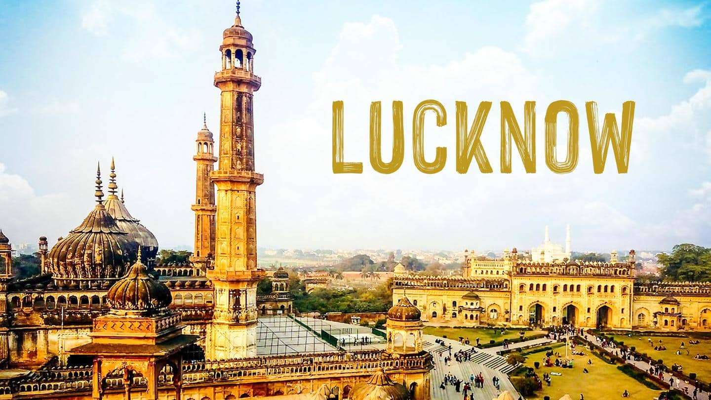
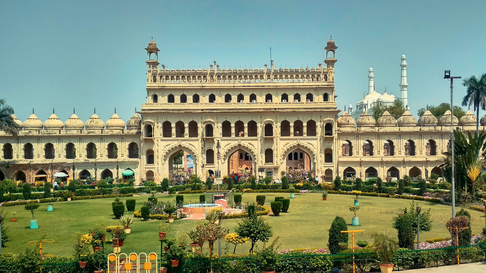
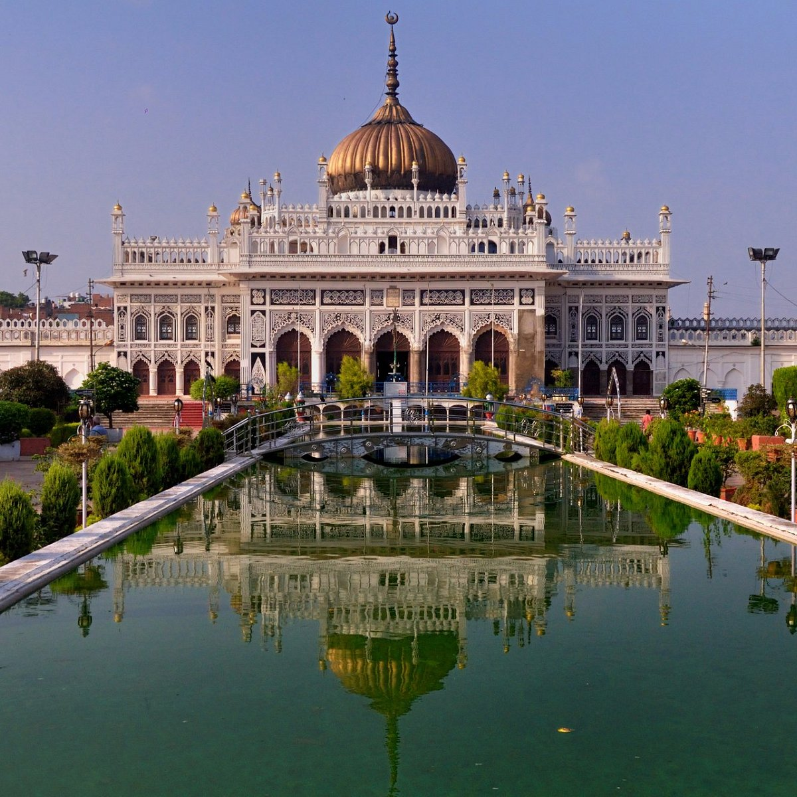
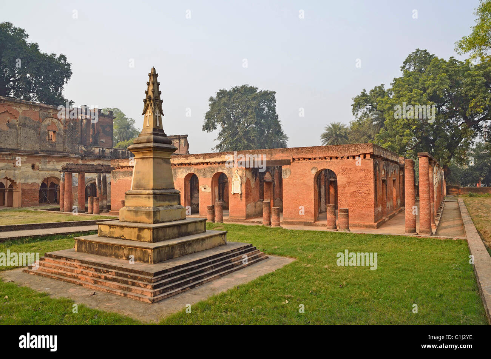
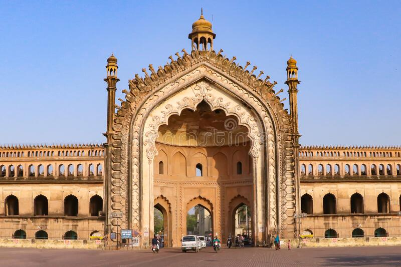
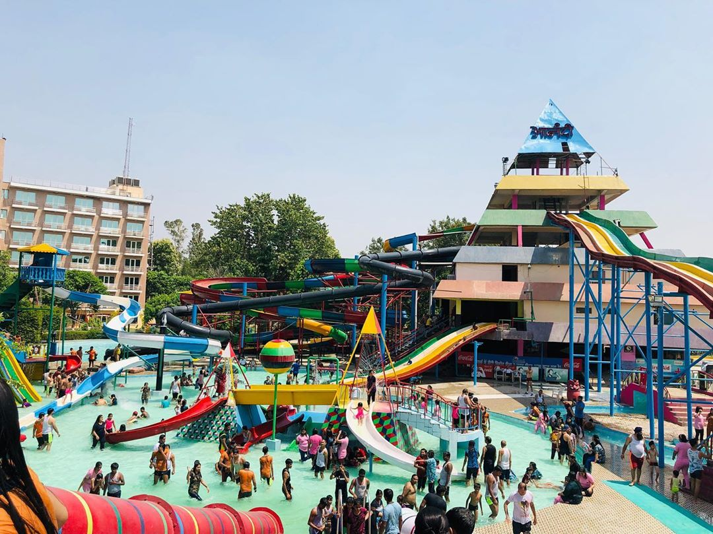
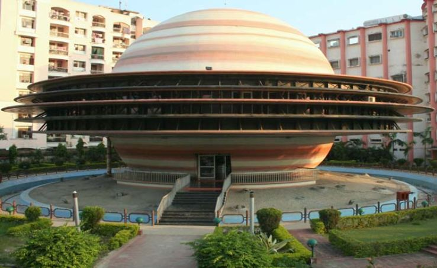
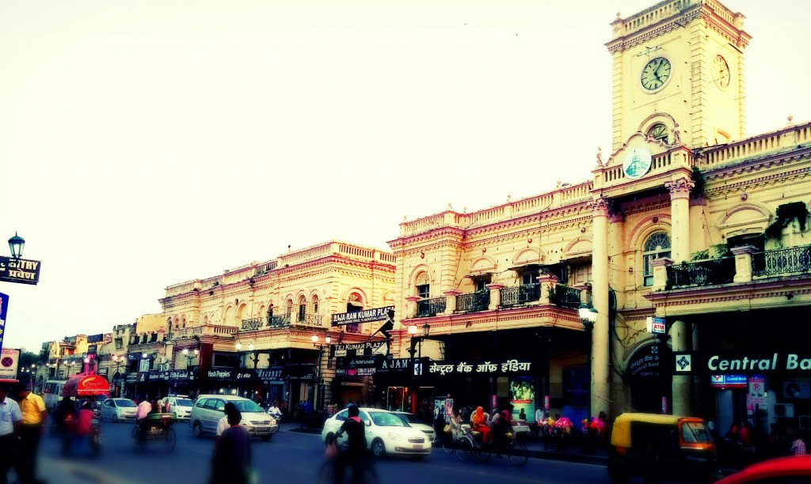
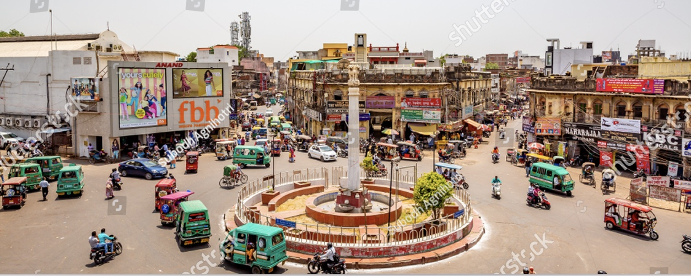

HOW MAY DAYS ARE ENOUGH FOR LUCKNOW
2 days maximum is needed for lucknow. on a day 1 you can visit bada imambada, chhota imambada and residency and some market as per interest. In day 2 you can visit Zoo and ambedkar park. Better would be to hire a Auto or taxi and do the sight seeing in a single day.
1.BADA IMAMBADA
2.CHHOTA IMAMBADA
3.BRITISH RESIDENCY
4.RUMI DARWAZA
5.FUN CITY WATERPARK
6.INDIRA GANDHI PLANETERIUM
7.If you wan to visit market then you should visit to HAZRATGANJ
8.If you want to eat the famous food of lucknow like Kebab then you should visit AMINABAD
LUCKNOW FAMOUS FOR varios type of embroidery work. CHIKANKARI, a 400-years old embroidery market. also it is famous for its KEBAB and HISTORICAL MONUMENTS.
I HOPE THAT YOU ALL WILL ENJOY YOUR THIS SUMMER VACATIONS IN LUCKNOW:)
THANK YOU
This website is created by YUSUF FAROOQUI.